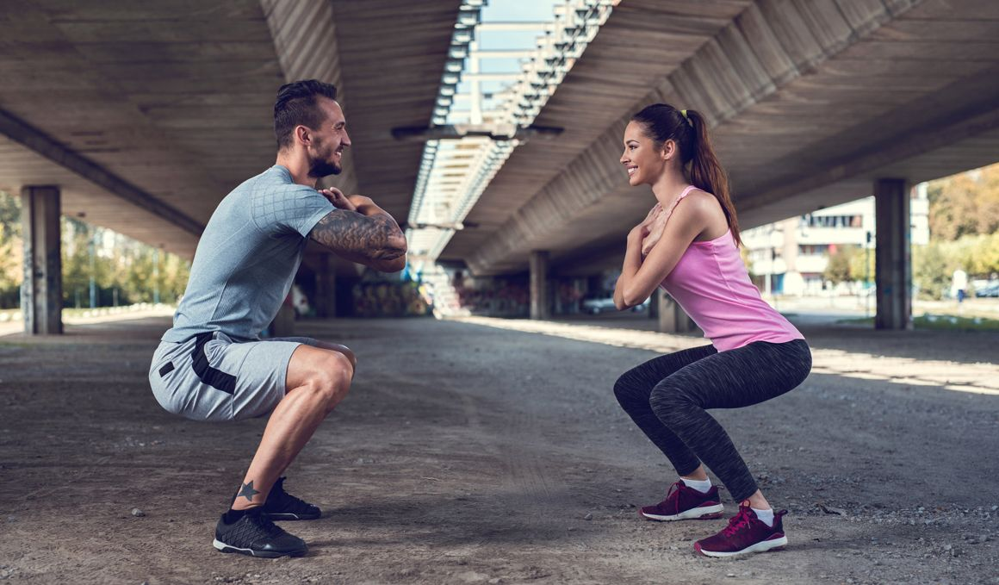
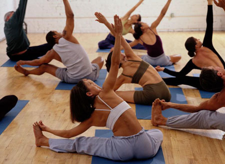
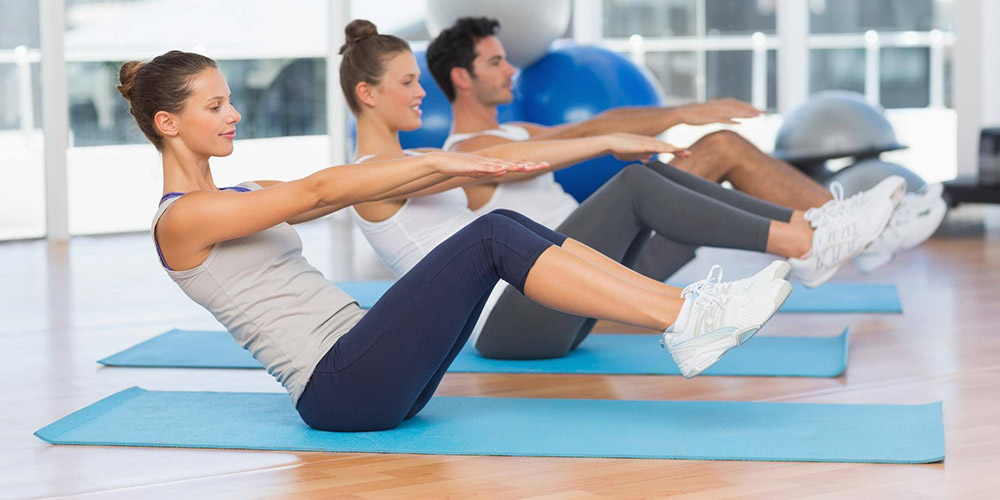

Disciplinas
Entrenamiento funcional
Es un método de entrenamiento con un enfoque integral y totalizador, en el cual se estimulan de forma combinada las capacidades de nuestro cuerpo -fuerza, resistencia, agilidad, movilidad y coordinación- con el objetivo de optimizar las funciones diarias y la calidad de vida de las personas que lo practican. Trabajamos con el peso del propio cuerpo y pesos libres (sin maquinas) con diferentes elementos como bandas elasticas, escaleras para coordinacion, conos, o elementos del hogar adaptados.
Stretching
El Stretching es un método para trabajar la flexibilidad a través de la elongación muscular y la movilidad articular. Se realiza pasando a traves distintas posturas ya sea de pie, sentados o acostados, acompañadas con la respiración. Mejora la postura, la movilidad articular. Alivia de dolores musculares, disminuye el estrés. Puede ser realizada por todas las personas que lo deseen, desde quien quiere mejorar su capacidad de estiramiento muscular, hasta quien desea es salir de una vida sedentaria
Pilates mat
En el Pilates Mat los ejercicios se realizan sobre una colchoneta. Los movimientos se llevan a cabo a cuerpo libre, es decir, que no se prevee la asistencia de máquinas aunque se pueden usar elementos que hacen más divertidas las rutinas de movimientos: mancuernas, bandas elásticas y/o pelotas, rollos. Los ejercicios de Pilates están regidos por principios que nos servirán para una correcta ejecución de los ejercicios. Alineación Concentración Control Precisión Fluidez Respiración